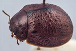
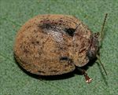
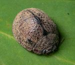
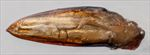
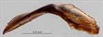
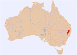

Click on images to enlarge

Female, Guyra, N.E. New South Wales

Female, Bookookoorara, N.E. New South Wales

Female, Bookookoorara, N.E. New South Wales

Aedeagus, dorsal view (Mursons Creek, N.E. New South Wales)

Aedeagus, lateral view (Mursons Creek, N.E. New South Wales)

Distribution
Ta16
Name
Trachymela sp. Ta16
Reference specimen
2002-368, Deepwater, NE New South Wales
Adult Description
Length: ♂ 5.7–7.0 mm (n=14), ♀ 6.6–7.4 mm (n=29).
Colouration:
Head: uniformly mid-brown, sometimes darker or even black around rim of eyes near antennal insertion, black behind level of posterior margin of eyes, mandibles with dark-brown to black tips; labrum slightly paler; antennomeres 1–4 light-brown, 5–11 variable, sometimes differing little from 1–4, sometimes uniformly darker or grading towards darker-brown (very rarely black) at apex.
Pronotum: brown, concolorous with or a fractionally darker shade than head, anterior margin of disc is sometimes fringed in black.
Scutellum: uniformly very dark-brown or black.
Elytra: brown, concolorous with pronotum, with small, round, raised dark-brown or black wart-like protuberances scattered quite evenly over much of surface of disc, a narrow border surrounding the scutellum is black, this black area sometimes extending for some distance along elytral suture towards summit, punctures are concolorous with or very fractionally darker than interstices, humeral callus black.
Venter & Legs: very dark-brown or black with legs concolorous, epipleura black.
Cuticular Wax: moderate to thick layer of brown, with the prominent dark verrucae usually visible.
Morphology:
Head: punctures moderately sized (pd ≈ 1.5–2×ef), evenly and densely distributed. Antennae very short (AL/BL: ♂ 39–43%, ♀ 31–34%), filiform, outer segments noticeably flattened.
Pronotum: almost evenly curved transversely with lateral margins slightly explanate, foveal depression shallow usually with a clearly defined and almost round elevated area in middle, puncturation clearly impressed, similar to or slightly more coarse than those on head and rather evenly distributed in discal area, becoming much coarser from foveal depression to lateral margins, interstices usually smooth in discal area, rarely slightly rough but never so as to obscure punctures. Front margins join lateral margins in a smoothly rounded right-angle, with lateral margin curving smoothly and gradually towards rear margin.
Scutellum: smooth and unpunctured.
Elytra: rounded, greatest height viewed laterally is clearly in front of middle of elytral margin; surface evenly curved transversely over discal region, sometimes noticeably explanate at margins, lightly curved longitudinally in anterior half, then slightly more strongly curved, a very shallow depression extends across surface just in front of middle, punctures large and distinct and relatively evenly distributed between the verrucae and set deeply among the network of raised interstices, smaller punctures are scattered among them, small round verrucae, sometimes with a small puncture in centre, are scattered very evenly over elytral surface, elytral suture not carinate, surface continuous under humeral callus. Vertical extension of epipleura considerable (HCE/PW = 0.38–0.41).
Venter: prosternal process narrow anteriorly, widening evenly towards posterior, open or very lightly closed anteriorly, short setae sparsely distributed over prosternal process and mesoventrite, a single seta on anterior and median trochanter; front edge of metaventrite beveled, truncate; inner edge of posterior of epipleurae lacking setae.
Male Genitalia (Aedeagus):
Dimensions: short (LPE/BL = 25–27%), lanceolate.
Dorsal view: shaft widest at rear with sides converging in straight line or slightly sinuous arc from there to tip, dorsal surface membranous with a very faint dorso-median channel present, ostium very small, tip triangular.
Lateral view: shaft sharply curved at 120° at about 40% of length from basal extreme, lower edge towards apex from curve quite straight until close to apex where there is an almost imperceptible downwards curve, dorsal surface elevated into a blunt peak at about 20% posterior from apex, tip deflexed.
Immature Stages
Unknown.
Similar species
Ta19: individuals of this rather variable species can be very similar to Ta16. Most specimens of Ta19 tend to have a lower density of black vittae on the elytra, though these tend to be larger and more conspicuous, and the elytral surface is reticulated rather than clearly punctured though there are many intermediates in these characters. Specimens of Ta16 invariably have a black or very dark-brown scutellum whereas that is only the case with Ta19 specimens from southern (cooler) localities. The aedeagus does clearly differentiate these species.
Ta32: this species is of a similar size, with small scattered verrucae on the elytra. However, its scutellum is not black and it is much lighter in colour ventrally also, with the inside surface of the epipleura light brown.
Ta65: this species is very similar to Ta16, especially in the distribution and density of verrucae on the elytra. It may be distinguished by the lighter colouring of the scutellum and ventral surface, lacking the dark-brown colouration of internal surface of epipleura.
Ta66: quite similar in size and general appearance, but its verrucae are not as regularly distributed as those of Ta16 and its epipleura are not black.
Notes
Taxonomy: In most characters it seems close to Trachymela prodroma (Blackburn), although that species is described from Victoria.
Distribution & Abundance: A small species from the Northern Tablelands of New South Wales, extending into the Granite Belt of southern Queensland.
Host Associations: Found on monocalypts in the stringybark group (Eucalyptus: section Capillulus), including Eucalyptus caliginosa and E. cameronii.
Morphological Variation: Several female specimens found on the stringybark Eucalyptus cameronii, all from the Boonoo Boonoo area, have a denser distribution of verrucae on the elytra than is typical for this species and possibly constitute another species or may belong to Ta19. A specimen from Tingha, NE New South Wales, has completely brown epipleura; however, in all other characters, including its host having been a stringybark species, it is a typical Ta16.
Copyright © 2026. All rights reserved.
{kind=link}
{kind=link}
{kind=link}
{kind=link}
{kind=link}
{kind=link}